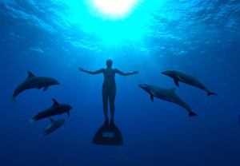

VISIONS 3 KEYNOTE
THE 3RD ANNUAL VISIONS FILM FESTIVAL & CONFERENCE OPENS WITH A KEYNOTE ADDRESS FROM GINA PAPABEIS, WHO SHARES HER EXPERIENCE WORKING WITH 2010 ACADEMY AWARD-WINNING FILM “THE COVE,” HER TAKE ON THE RELATIONSHIP BETWEEN FILM AND TRANSMEDIA MARKETING, AND AN EXCLUSIVE SNEAK PEEK OF HER CURRENT PROJECT WITH THE OCEANIC PRESERVATION SOCIETY.
The Visions Film Festival & Conference (VFFC), presented by the UNCW Film Studies Department, is pleased to announce that the 3rd annual Festival will launch its full day of film screenings and conference panels on April 5 with a keynote address from Gina Papabeis.
Papabeis offers a unique and highly-relevant perspective to this year’s audience, carrying with her a slew of unique accomplishments in the entertainment industry, as well as a professional skill set more important to this generation of filmmaking than any before. Her work to date ascribes to an intrinsic desire to make a difference, and having created successful marketing campaigns for important films with limited resources, Papabeis’ take on social media’s relationship to film will speak volumes to today’s rising storytellers and imagemakers.
Gina Pababeis contributed to the outreach and social media campaign of the 2010 Academy Award-winning film The Cove, an activist documentary produced by the Oceanic Preservation Society (OPS), which reveals the harrowing truth of animal abuse and mercury-related health risks from dolphin drive hunting in Taiji, Japan. Constructed as a thriller, the documentary follows a specialized team, headed up by OPS director Louie Psihoyos and dolphin-trainer-turned-activist Richard O’Barry, as they infiltrate the industry. With the help of Papabeis’ expertise in social marketing, The Cove saw a wide theatrical run that spanned not only the U.S., but the entire globe.
Papabeis has since stayed onboard with OPS and is now an Associate Producer on their next genre-pushing documentary feature, which she describes as “even more ambitious than The Cove in scale.” She plans to give the Visions festival audience a sneak preview of the new film during her address on April 5, revealing only that it “plays more like The Avengers or a Bond movie than a documentary, but the problem is real and the stakes are high.” A full schedule of the day’s event will be posted online in the coming weeks.
A graduate of Florida State University, Papabeis’ accomplishments are a powerful testament to the FSU College of Motion Picture Arts’ Torchlight Program, which concentrates on molding traditional marketing techniques with new transmedia technologies. The program contributed to her knowledge of marketing, selling, and distributing films with the advent of progressively interactive social media platforms. Says Papabeis, “At Torchlight we did a lot of work relating to the changing landscape of distributing independent films. For instance, how do you identify and reach out to a potential audience for your film other than through print and TV ads?” For Papabeis, while marketing is one of the most important aspects of an independent film’s lifespan, she finds it is also often the most overlooked. “What’s the point of making a film if no one sees it?” she asks.

OPS is a small group with a limited number of positions. When Papabeis approached Louie Psihoyos about a possible internship, she was uncertain as to whether they were even hiring: “I pitched myself, and knowing that The Cove was about to hit theaters, I focused on my experience with outreach and social media. I did a lot of research on the organization and on the team before calling.” The research paid off and she was given an internship position, through which she was tasked with handling the film’s outreach.
Now involved in OPS’s day-to-day operations, Papabeis is exactly where she always wanted to be. When she began her pursuit of a filmmaking career, she wasn’t sure if she had the patience or the resources to produce nature documentaries or the ability to make money doing it. That all changed with her introduction to OPS. “When I started working on The Cove, it all clicked,” she says. “Now I’m hooked. I can’t imagine doing work that doesn’t have some goal of changing the world for the better.”
The Cove has since provoked major changes in Japan’s dolphin hunting business, yet the documentary resonates with American audiences as well. Its condemning expose of dolphin training programs, for example, involves a portrayal of the practice as entrapment rather than hospitality. In one scene, Richard O’Barry describes the depression of a dolphin he had trained and was very close with, who eventually committed suicide by suffocation. Papabeis has read hundreds of emails from people who have been affected by the film, “including people who said they would never visit a dolphinarium again, or people who went vegetarian after seeing the film.” She recalls one inspiring story in which a group of middle school students hosted a bake sale to raise money to help save dolphins. “That might be the first time they learned they could shape the world they live in,” says Papabeis. “That’s a powerful realization.”
The fact that The Cove wears its editing- and sound design-based genre-bending tactics on its sleeve is a large part of the film’s success. Papabeis learned that while working on the film that narrative filmmaking conventions enhance a documentary’s ability to inspire people to action. It’s a thriller. It’s emotional. It tells a good story and has great visuals to help it . . . Louie likes to call film ‘a weapon of mass construction’.” Her thoughts are that reaching an audience on an emotional level necessitates a compelling story.
While the documentary world continues to break ground in proving the moving image’s capacity for inspiring social change, Gina Papabeis also shows us the power one passionate individual can have in shaping the success of a film and a movement. When she opens VFFC 2013 with her keynote speech on April 5th, Papabeis will speak to both filmmakers, film-goers, and activists alike. Spreading the word is easier now than ever before, but what Gina Papabeis has tapped into is the art of spreading a message, an endeavor that relies on planning, craft, and execution.